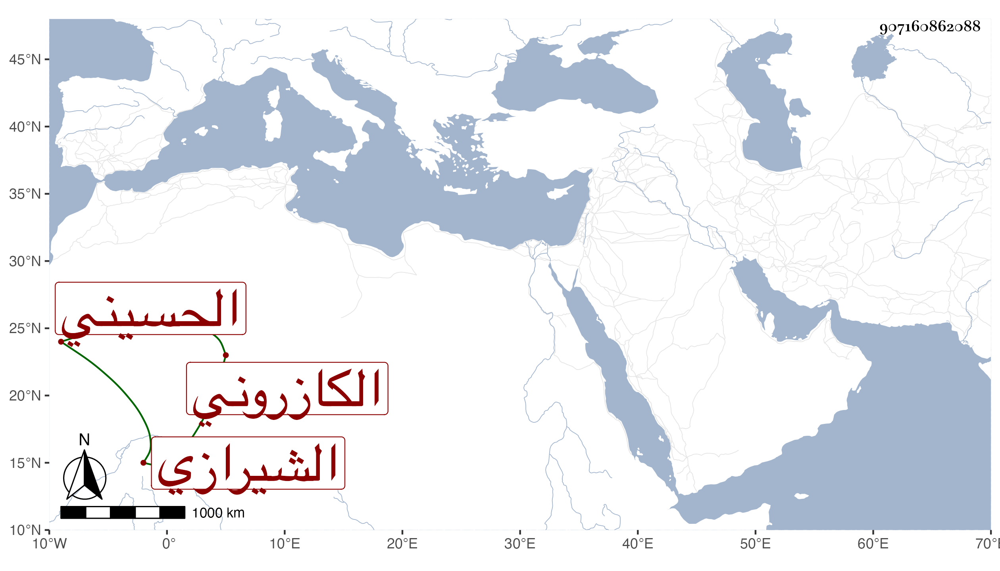

0902Sakhawi.DawLamic.ITO20230111-ara1.EIS1600.907160862088
Biography ID: 907160862088
880
أسد الله بن لطف الله بن روح الله بن سلامة الله المظفر أبو الليث بن النظام بن الفخر بن العز الحسيني الكازروني ثم الشيرازي فاضل قدم قريب الأربعين فأخذ عن شيخنا بقراءته وقراءة غيره ومما قرأه عليه المتباينات وشرح النخبة وقال قراءة بحث واستفادة تشتمل على دلالة الفهم الثاقب والإفادة وكذا قرئ عليه في البخاري وكان كل قليل يمده بألف درهم فلما رام الرجوع تكلم له شيخنا ابن خضر في شيء يتزود به فأمر له بثلثمائة فتأثر السائل والمسئول له وسافر فحين وصوله لبيت المقدس توفي قبل فراغ المبلغ المعين فعد ذلك من كرامات شيخنا .
